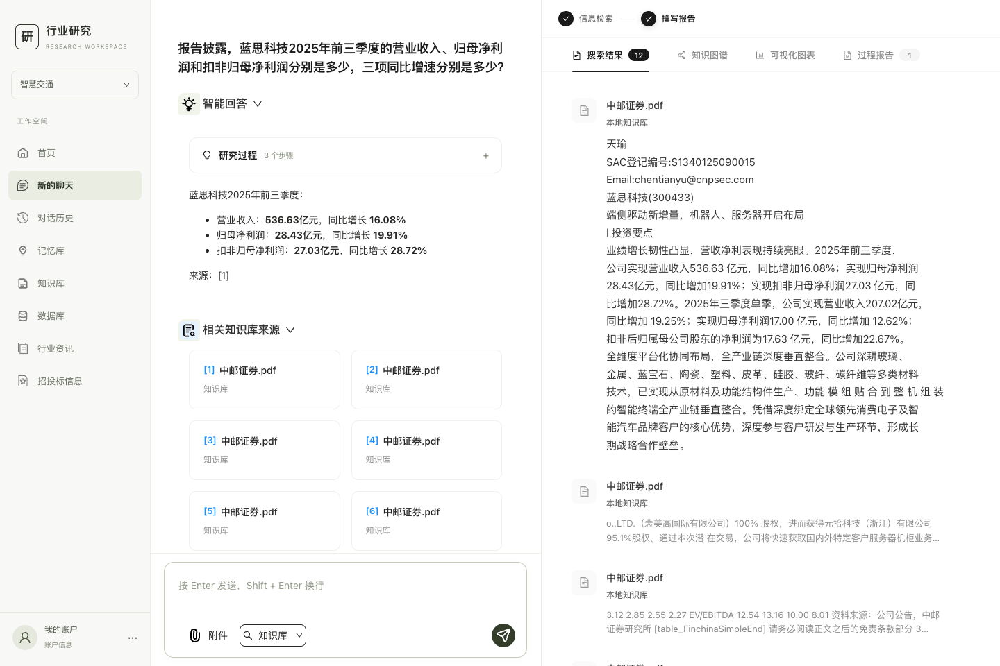

DATA · QUALITY · EVALUATION
面向行业报告的可追溯问答系统。把数据集建设、证据质量校验与模型评测连接起来，让每次改动都有可核查的结果。
四类任务；开发 / 验证 / 测试为 40 / 30 / 30 题。
固定 20 题切片，18 道可回答题参与检索评分。
内部合成 ToolBench-200，共享路由策略 v6。
文档身份、SHA-256、物理页码与证据片段。
Schema、类别配额、原文定位与片段一致性。
分层划分与版本哈希，保留可复现评测口径。
检索覆盖、工具选择和参数合法性分别核验。

数据规范、证据溯源与划分策略
实验结果与评分方法
数据集构建器源码
共享工具路由契约源码
在解压后的作品集根目录运行：
python3 02_成果与验证/verify_results.py
检查文件哈希和数据配额，复算最终检索与路由统计；提供 16 项通过的离线测试。
查看证据文件与运行说明
完善字段级证据标注、按来源分组的数据划分与困难样本覆盖，结合独立评测分析数据选择对模型效果的影响；进一步优化多文档证据分配及并发调度。